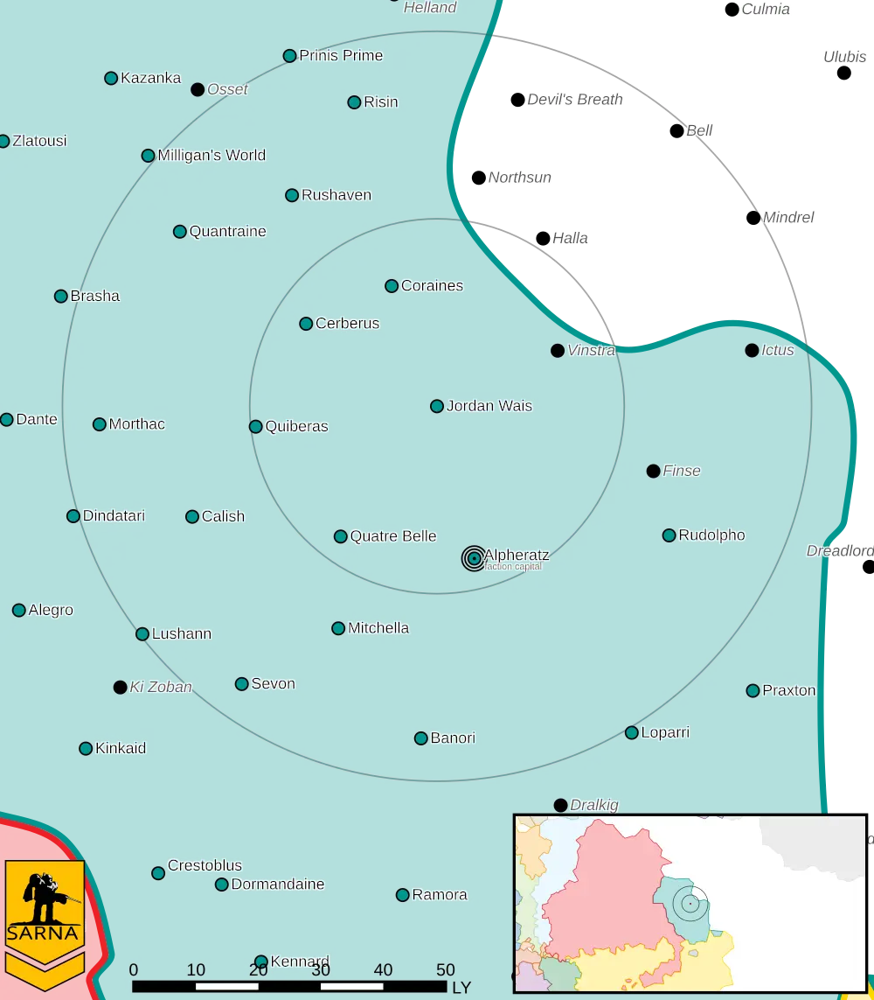

Locations¶
Mercenary’s Pride takes place on Jordan Wais, Alpheratz, Coraines, and Northsun.
Jordan Wais¶
Jordan Wais is a relatively quiet core world of the Raven Alliance.
{kind=link}
Planet Type: Terrestrial
Diameter: 11.700,0 km
Position in System: 2 (0,630 AU)
Time to Jump Point: 7,03 days
Year length: 1,1 Terran years
Day length: 27,0 hours
Surface Gravity: 1,14 g
Atmosphere: Breathable
Atmospheric Pressure: Thin
Atmospheric Composition: Nitrogen and Oxygen, plus trace gasses
Equatorial Temperature: 38C
Surface Water: 27%
Highest Native Life: Reptiles
Capital City: Schmidttown
Population: 108.878.071
- Socio-industrial Levels:
C: Moderately advanced World
D: Low industrialization; about 20th century level
A: Fully self-sufficient raw material production
C: Limited industrial output
D: Poor agriculture
HPG: None
Sarna: Jordan Wais article
Alpheratz¶
Alpheratz is the capital of the Raven Alliance. Alpheratz IV is home to the Alliance Executive Parliament and has the largest military manufacturing capabilities in the Alliance, including Mountain Wolf BattleMechs.
{kind=link}
Planet Type: Terrestrial
Diameter: 15.098,3 km
Position in System: 4 (0,280 AU)
Time to Jump Point: 4,12 days
Year length: 0,8 Terran years
Day length: 19,0 hours
Surface Gravity: 1,0 g
Atmosphere: Breathable
Atmospheric Pressure: Standard
Atmospheric Composition: Nitrogen and Oxygen, plus trace gasses
Equatorial Temperature: 30C
Surface Water: 70%
Highest Native Life: Mammals
Satellites: Aisha (large)
Capital City: Mackennopolis
Population: 3.432.480
- Socio-industrial Levels:
B: Advanced World
A: Heavily industrialized
B: Mostly self-sufficient raw material production
A: High industrial output
B Agriculturally abundant world
HPG: None
Sarna: Alpheratz article
Coraines¶
Coraines is a wealthy but minor system in the Raven Alliance.

Planet Type: Terrestrial
Diameter: 13,500,0 km
Position in System: 4 (2,240 AU)
Time to Jump Point: 16,11 days
Year length: 3,6 Terran years
Day length: 28,0 hours
Surface Gravity: 1,31 g
Atmosphere: Breathable
Atmospheric Pressure: Standard
Atmospheric Composition: Nitrogen and Oxygen, plus trace gasses
Equatorial Temperature: 34C
Surface Water: 65%
Highest Native Life: Fish
Satellites: GGO.1 (medium), GGO.2 (medium), GGO.3 (medium)
Capital City: La Celle-Dunoise
Population: 80.480.264
- Socio-industrial Levels:
B: Advanced World
C: Basic heavy industry; about 22th century level
A: Fully self-sufficient raw material production
B: Good industrial output
A: Breadbasket
HPG: B-rated
Sarna: Coraines article
Halla¶
Halla is an abandoned world near the Raven Alliance.

Planet Type: Terrestrial
Diameter: 12.000,0 km
Position in System: 1 (0,120 AU)
Time to Jump Point: 2,58 days
Year length: 0,5 Terran years
Day length: 19,0 hours
Surface Gravity: 0,9 g
Atmosphere: Breathable
Atmospheric Pressure: Thin
Atmospheric Composition: Nitrogen and Oxygen, plus trace gasses
Equatorial Temperature: 28C
Surface Water: 71%
Highest Native Life: Birds
Capital City: Neu Fayette Prime
Population: 0
- Socio-industrial Levels:
Regressed: Pre-industrial world
X: None
X: None
X: None
X: None
HPG: None
Sarna: Halla article